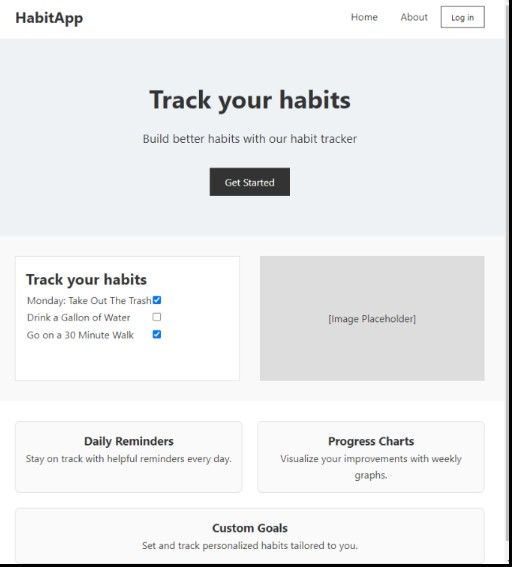

Shiwlee Rahman
About Me
Hi!, I’m Shiwlee Rahman, a Computer Science student at Queens College. I enjoy building creative digital projects and solving real-world problems through code. I’m passionate about cybersecurity, software engineering, and user-centered design. Technology inspires me to make daily life more secure and efficient. Outside of class, I love cooking, watching movies, reading, and helping others.
Education
Queens College, City University of New York (CUNY), NY
Bachelor’s in Computer Science
Expected Graduation: 2026
LaGuardia Community College, NY
Associate in Computer Science
Graduated June 2023
Medical Assistant, Anthem Institute, NY – 2015
Hafiza Khatun Girls’ High School, Bangladesh
Professional Values
I believe in writing clean and efficient code, staying organized, and always being open to learning. I value teamwork, time management, and taking initiative in group projects. My goal is to build software that improves lives — thoughtfully, securely, and beautifully.

Project
In my Software Engineering class, I worked with a team to build a Personal Habit Tracker web application. Our goal was to help users stay organized and motivated by tracking their personal and professional goals. The app features reminders, a visual planner, habit streak tracking, and motivational badges. I contributed to the backend logic and helped design a clean, user-friendly interface using Java, HTML/CSS, and MySQL. This project taught me how to collaborate using GitHub, communicate ideas clearly, and turn user needs into functional features.
Favorite Quote
"You will face many defeats in life, but never let yourself be defeated."
Hobbies
Cooking
I love creating delicious meals, especially dishes that bring comfort and joy. Cooking allows me to express creativity, unwind, and share something meaningful with others.
Helping Others
I enjoy helping others whether it’s giving study support, coding advice, or just being someone to count on. I believe in growing together and lifting others up.
Watching Movies
Movies help me relax and explore different emotions, cultures, and ideas. I enjoy a wide range from emotional dramas to tech thrillers and heartwarming stories.
Reading
Reading keeps my mind sharp and expands my imagination. I enjoy novels, science books, and inspirational stories.
Traveling
I love exploring new cities, nature spots, and cultures. Traveling gives me perspective, inspiration, and unforgettable memories with people and places.